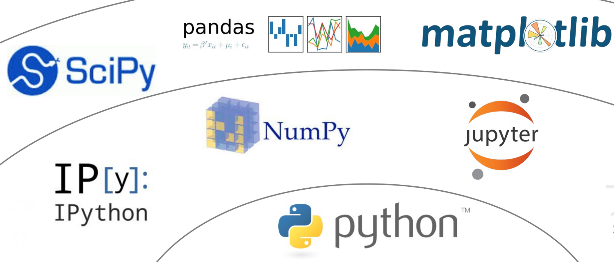
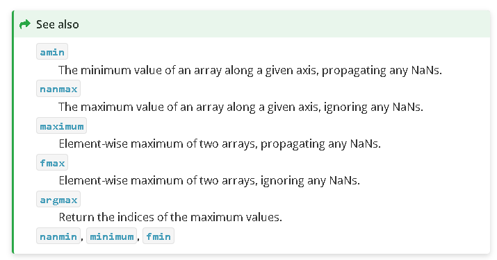

3 Scientific Python#
3.1 Introduction#
One of the main reasons why python is great is because it is supported by such a large community of people developing opensource (free) packages. A package is a collection of code that can be run using python and augments the capabilities of standard python. In fact, it is often very hard to come up with an idea for which there is not already a python package. Many of these packages are available and can be installed either via Conda or Pip which we discussed at the beginning of the course. In this set of lectures we will look at a particular set of packages which are specifically targeted at scientific computing / datascience.
Whilst users interact with these packages using python code, many of the key datastructures and operations are really written in low-level languages like c or Fortran. As a result one can largely overcome one of the main limitations of python - its speed.
The packages are related to one another:
The foundational package is
Numpy- this introduces arrays and matrices and a range of associated operations. Whilst they look quite similar to lists they are fundamentally different in their use of memory which makes them extremely fast. This also means, the items in a numpy array must be of the same type.Built on
Numpyare a key plotting packageMatplotlib,Pandaswhich enables one to efficiently work with tables of data andSciPywhich contains many routines for fitting, solving equations and optimisation.
3.2 Numpy#
Numpy is the base package for all of the other packages mentioned above. It handles single or multi-dimensional arrays and provides functions to perform many common operations using fast c and Fortran code whilst giving us a nice simple python interface. To use numpy we must use its own special datatypes the most basic of which is a 1d array.
import numpy as np
my_1d_horizontal_array = np.array([1,2,3,4,5]) # create a numpy array from a list
my_1d_vertical_array = np.array([[1],[2],[3],[4],[5]]) # create vertical array.
print(my_1d_horizontal_array)
print(my_1d_vertical_array)
print(type(my_1d_horizontal_array[1]))
[1 2 3 4 5]
[[1]
[2]
[3]
[4]
[5]]
<class 'numpy.int32'>
By default the values stored in these arrays are floats but we can save memory and specify the datatype. For example, it is common for images to be represented by arrays which have 8 bit integers (values ranging from 0 to 255).
my_1d_horizontal_array = np.array([1,2,3,4,5], dtype=np.int8)
type(my_1d_horizontal_array[1])
numpy.int8
We can also create multidimensional arrays
my_2d_array = np.array([[1,2,3],[4,5,6],[7,8,9],[10,11,12]])
print('2d arrays')
print(my_2d_array)
print(my_2d_array[0]) # Access row equivalent to my_2d_array[0, :]
print(my_2d_array[:,0]) # Access column
print(my_2d_array[0,2]) #Access value my_2d_array[row, col]
print('shape=',np.shape(my_2d_array))
print('\n3d arrays')
my_3d_array = np.array([[[0,1,2],[3,4,5]],[[6,7,8],[9,10,11]]])
print(my_3d_array)
print(my_3d_array[0,1,2])
print('shape=',np.shape(my_3d_array))
2d arrays
[[ 1 2 3]
[ 4 5 6]
[ 7 8 9]
[10 11 12]]
[1 2 3]
[ 1 4 7 10]
3
shape= (4, 3)
3d arrays
[[[ 0 1 2]
[ 3 4 5]]
[[ 6 7 8]
[ 9 10 11]]]
5
shape= (2, 2, 3)
Warning: - rows and columns or columns and rows#
Numpy arrays are accessed by their rows first, then columns, then depth and so on for higher dimensions. This is described as the axis where row=0, col=1, depth=2 etc. This can cause confusion when working with images (3d arrays) since other image processing modules often describe x or the column as the first number.
Numpy arrays enable us to do arithmetic, matrix muliplication, linear algebra etc. The same indexing and slicing behaviour we observed for lists and tuples also applies to numpy arrays. However, numpy is a bit more restrictive:
all values in an array must have the same type.
Nested arrays have to have a consistent length.
The advantage is that they are fast and that you can do things like select a column of data easily (see above).
a = np.array([1,2,3])
b = np.array([1,2,3])
print(a+b)
print(a+3)
[2 4 6]
[4 5 6]
c = np.array([[2,3],[4,5]])
d = np.array([[1,0],[0,1]])
print(c*d)
[[2 0]
[0 5]]
print(c.T) # Transpose of a matrix
print(np.linalg.det(c)) # Determinant of a matrix
print(np.linalg.inv(c)) # Inverse of a matrix
[[2 4]
[3 5]]
-2.0
[[-2.5 1.5]
[ 2. -1. ]]
initial_array = np.linspace(0,20,21)
print(initial_array)
third_value = initial_array[2] # Note indexing starts at 0 so third item is at index 2
print(third_value)
sliced_array = initial_array[1:9:2] # Start at index 1, stop at index 9 (where 9 is not included) and take every other value in between.
print(sliced_array)
[ 0. 1. 2. 3. 4. 5. 6. 7. 8. 9. 10. 11. 12. 13. 14. 15. 16. 17.
18. 19. 20.]
2.0
[1. 3. 5. 7.]
3.2.1 Numpy provides two special values:#
np.nan: nan stands for Not A Number and is used to indicate invalid datanp.inf: represents mathematical infinity
Warning - np.nan is not equal to np.nan#
np.nan == np.nan
One might think this should evaluate to True but it actually produces False. If you want to check if a value is a nan or inf use Numpys built in methods: np.isnan() and np.isinf()
3.2.2 Performing calculations#
Numpy enables us to perform calculations on whole arrays at once. Whilst we can still loop through each index, Numpy intends us to use its builtin array methods. These come in two types:
new_array = array.method()
np.method(array)
For some methods only one of these formats exists, but sometimes both are possible. Check the documentation as often the second method modifies the existing array (ie has no return value). In contrast the first method leaves the original array unchanged and produces an entirely new copy of the array with the method having been applied.
Other methods may not return a complete array but a single value. For example, suppose we want to sum all the numbers in an array:
total = array.sum()
total = np.sum(array)
Despite both returning a value they are not always the same in terms of performance. Regardless either method will be much quicker than writing it yourself in python. To make the point here is me summing an array of numbers using a loop and then doing the same with array.sum() and finally np.sum(array)Look at the difference in time. A bit of thought can speed up your code a lot.
num_values = 10000000
lots_of_numbers = np.linspace(0, num_values, num_values) # create large number of consecutive values
%%time
# Sum numbers using a loop
total=0
for i in range(num_values):
total += lots_of_numbers[i]
print(total)
50000000000038.51
CPU times: total: 2.11 s
Wall time: 2.11 s
%%time
#Use builtin methods.
total = lots_of_numbers.sum()
print(total)
50000000000000.08
CPU times: total: 15.6 ms
Wall time: 16 ms
%%time
total = np.sum(lots_of_numbers)
print(total)
50000000000000.08
CPU times: total: 15.6 ms
Wall time: 15 ms
3.2.3 Reading and writing data from files:#
Often numpy arrays will be populated with data stored in a file or alternatively the results calculated from that data will need to be stored again.
#Read array from file
old_data = np.loadtxt('resources/textfiles/numerical_data.txt')
print(old_data)
[0.43763659 0.30886399 0.77923026 0.95339834 0.15372851 0.71259856
0.31177016 0.93333965 0.52173694 0.02331096 0.74909259 0.166828
0.89000551 0.96823857 0.59876399 0.3527579 0.48324985 0.55538789
0.2919381 0.85985251]
#Write data to a file
data1 = np.random.random(100)
data2 = np.random.random(100)
np.savetxt('resources/textfiles/data1.txt', data1)
np.savetxt('resources/textfiles/combined_data.txt', np.c_[data1, data2]) #Puts two 1d arrays together. Open the text file and see how it is displayed
3.2.4 Using Documentation#
Numpy like many significant python packages is enormous. There are literally thousands of functions designed to allow you to do all kinds of manipulations to data. Even if we spent several weeks working through its main sections what would that achieve? It is an impossible task to memorise how to use even a small subset of these functions. Plus this is just Numpy, there are loads of other useful python modules some which you may use a lot and some which you might use once in one project.
A key skill as a programmer is to be able to know roughly what you are trying to achieve, find an appropriate python package, look up the documentation concerning a particular function and then to work out how to use it in your own code. Fortunately, for most mainstream scientific packages the documentation is very well written.
3.2.5 Example - find the time at which the maximum intensity data was measured#
Here is a quick example. Suppose I am running an experiment that measures a signal that changes in intensity over time. I want to work out at what time the intensity was highest. The data consists of an array of time values and an array of intensity values. Its a fairly safe guess that numpy will have some functions to help me but Im not sure exactly what I need. To solve this problem I need:
To find the maximum intensity
Find the index in the intensity array at which this maximum value exists
Use this index on the time array to find the time at which the maximum occurs
We need to look at the documentation and find some tools to help
3.2.5.1#
Before we try and look up the documentation its worth checking which version of Numpy we are using. From the terminal conda list
There are many versions and not every function will be backwards compatible, so we want to make sure the version number is similar. We are using v1.23 and google comes up with 1.25. Its probably close enough but if things dont seem to match double check. The further left the number is the more significant the changes will be.
I therefore google numpy and max. It gives me a few options.
Follow this link to the docs for numpy.maximum
At the top of the page is the function definition. The next bit has a description of what the function does: Compare two arrays and return a new array containing the element-wise maxima. This doesnt sound like what we want to do so I move on.
The next two links are numpy.ndarray.max and numpy.max. The first is telling you this is a method that operates on an array (i.e max_val = array.max()). The second is telling you this is a numpy function (i.e max_val = np.max(array)). compare with the examples using numpy.sum above
If we look at the numpy.max page we again see a function definition and a description
This is close. It will find the maximum number. We could use this to solve the problem but always scroll down and look at the See also section, sometimes there is a function that does what you want more exactly.
argmax - return the indices of the maximum values. This is exactly what we need.
Whilst different packages will look slightly differently, most good documentation will have a similar format. Once we get used to it we can find answers really quickly.
The top gives us the quick function definition. This tells us how to use the function. We then get the parameters, which are described in more detail below. Notice some are positional arguments and others are keyword arguments. With keyword arguments, we only need to supply a value if we want to change the default behaviour. There is a section that explains the values returned from a function. Both the parameters and returns tell us what datatype to use or expect. If we are still unsure how to use it the documentation has some simple examples demonstrating its use.
Webpages like stackoverflow, tools like chatGpt can be useful, but checking the docs for your version is better.
3.2.5.2 Intellisense, tab completion and in-built docs#
Over time youll learn the names of different functions, but youll never remember it all. However, it becomes frustrating to have to look up the parameters, types etc every time. This is where a modern IDE comes in. In a new code cell, start typing np.m, youll notice that vscode starts suggesting options to you which you can choose (intellisense). When you write an opening bracket pause (np.max(). The documentation which weve just been looking at should then pop up. You can scroll through it directly in vscode.
3.3 Plotting graphs in python#
Visualising your data is a key part of science. Python has lots of different libraries for producing graphs. Some are general, some are more specialist. I list a few really popular ones:
Matplotlib - The place everyone should start, used very widely
Seaborn - Built on top of Matplotlib to make it easier to produce nice looking plots
Plotly - Another framework, easier to produce interactivity.
Bokeh - Interactive Web ready plots
Veusz - Gui based plotting package but completely scriptable in python
PyQt Graph - Links to the Gui framework PyQt
Gleam - Interactive Web apps
Geoplotlib - Plotting geographical data
3.3.1 Matplotlib#
For the purposes of these notes we will solely focus on Matplotlib, since it is probably the most widely used. Matplotlib creates both figures and axes. A figure is the container into which a plot will go. That container may hold one or more sets of axes.
3.3.1.1 A simple line plot#
Below we will create a sin wave with numpy and plot a quick line chart. Just as Numpy is almost always imported using a standard alias, Matplotlib is often imported using a standard pattern. This is isnt imperative but youll confuse people if you change this.
import numpy as np
import matplotlib.pyplot as plt
k = 1/4*np.pi
x = np.linspace(0,6*np.pi,100)
y = np.sin(k*x)
#Function driven
fig = plt.figure()
ax = fig.add_subplot()
ax.set_xlabel('x')
ax.set_ylabel('y')
ax.set_title('Example line plot')
ax.plot(x,y,'o-') # The first two params are our data, the final optional parameter specifes what our line / symbols should look like.
#plt.show() #If you are running this code in the usual editor rather than a Jupyter notebook you need to also write plt.show()
[<matplotlib.lines.Line2D at 0x2780cf1ace0>]
3.3.1.2 A simple scatter plot#
There are two slightly different syntaxes in Matplotlib. One uses functions drawn from plt and the other operates on the axes objects. The line plot above shows the second approach whereas here we show a scatter plot which uses the first.
import matplotlib.pyplot as plt
# Data
x = 10*np.random.random(10)
y = 10*np.random.random(10)
# Create a scatter plot
plt.scatter(x, y)
# Add labels and title
plt.xlabel('X data')
plt.ylabel('Y data')
plt.title('Scatter Plot')
# Display the plot
plt.show()
#### 3.3.1.3 A simple histogram
import numpy as np
heights = 1.5+np.random.normal(0, scale=0.5, size=100)
plt.hist(heights, bins=8)
plt.xlabel('Height')
plt.ylabel('Frequency')
plt.title('Height distribution')
plt.show()

3.3.2 Multiple plots#
We can put multiple plots on the same figure.
import numpy as np
import matplotlib.pyplot as plt
x=np.linspace(0,4*np.pi,50)
fig, axes = plt.subplots(2,1) # rows, columns
axes[0].plot(x[::2], np.sin(x[::2]), 'gx--')
axes[1].plot(x, np.cos(x), 'ro')
[<matplotlib.lines.Line2D at 0x2780d873370>]
3.3.3 Customising plots#
If all you want to do is plot some data, the above plots are probably fine. You can do a lot more with Matplotlib. However, before you do, it is worth asking yourself the question if this is the most efficient way to get the job done. Matplotlib enables you to customise absolutely everything and produce very sophisticated plots. However, this usually takes a lot of time. If your aim is to produce a one off, really nice looking plot for a publication or report you might be better off using a dedicated graph producing software. Veusz (mentioned above) is free to download, entirely gui based and will allow you to customise things very nicely in a very short amount of time.
You can however customise pretty much everything in a Matplotlib plot. This helpful graphic tells you what different features are called so you can look them up.

Another very useful approach if you want to create a more complicated plot is to look at the Matplotlib graph gallery, where example plots come with the accompanying code. There you can understand how to alter linestyles, axes appearance and much more. This also demonstrates other more advanced plot types: contours, heatmaps etc some of which well explore in the exercises.
Using Widgets#
Sometimes it is helpful to be able to interact with your data interactively. There are a number of ways to do this. If you are building more complicated programs you may want to use a gui framework such as Tkinter or PyQT5. Matplotlib also provides its own widgets which are quick to setup. In my experience these work well when running a python script but there are a lot of compatibility challenges when using these in Jupyter Notebooks for dataanalysis. If you are interested in exploring these I recommend reading up about ipympl.
In the context of Jupyter Notebooks (or IPython) the quickest way to build simple interactive elements is IPyWidgets. We will look at some simple use cases.
You can install this library from Conda:
conda install ipywidgets
import ipywidgets as widgets
import numpy as np
import matplotlib.pyplot as plt
%matplotlib inline
The simplest way to use IPyWidgets is to use the interact function. This takes what is called a callback function as the first argument. This is a function that is run every time a widget is updated. Notice this has not got brackets after it. This is because we dont want to call it. The interact function will call this function every time a change is made to a widget. We also supply options that indicate what type of widget we want.
Here is a really simple example:
# Here is our callback function which must have a default argument
def what_colour(colour='blue'):
print(colour)
# Here we supply the call back function and a list of options for a dropdown box.
widgets.interact(what_colour, colour=['blue','red','green'])
<function __main__.what_colour(colour='blue')>
# This example makes a slider that adjusts a graph
def plot_sin(freq=1.5):
xlim = [0, 10]
t = np.linspace(xlim[0], xlim[1], 1000)
f, ax = plt.subplots(1, 1, figsize=(3, 2))
ax.plot(t, np.sin(2 * np.pi * freq * t),
color='red')
widgets.interact(plot_sin, freq=(0, 3.0, 0.1))
<function __main__.plot_sin(freq=1.5)>
# You can also make widgets independently.
range_slider = widgets.FloatRangeSlider(
value=[-1., +1.],
min=-5., max=+5., step=0.1,
description='xlim:',
readout_format='.1f',
)
range_slider
#And then access their value.
range_slider.value
(-1.0, 1.0)
IPyWidgets use the datatype of your input arguments to determine what sort of widget to create:
Keyword arguments |
Widget |
|---|---|
|
Checkbox |
|
Textbox |
|
Integer Slider |
|
Float Slider |
|
Dropdown |
We can also use a shorthand called a decorator to indicate that a function should contain interactive elements. To do this we add @widgets.interact(arguments) above the callback function.
@widgets.interact(freq=(0,3, 0.2), color=['blue', 'red', 'green'], lw=(1., 10.))
def plot(freq=1., color='blue', lw=2, grid=True):
t = np.linspace(-1., +1., 1000)
fig, ax = plt.subplots(1, 1, figsize=(3, 2))
ax.plot(t, np.sin(2 * np.pi * freq * t),
lw=lw, color=color)
ax.grid(grid)